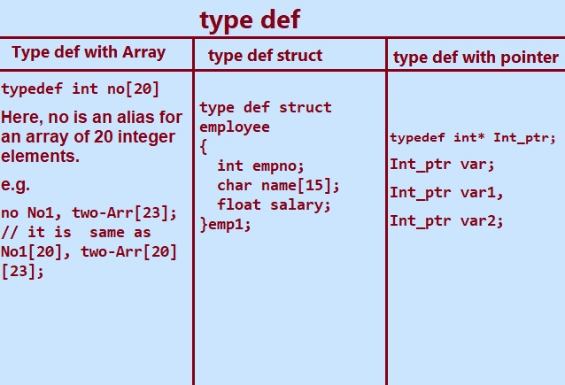

In this tutorial section Lets learn and how to declare and use type def in c programming.
type def: The C programming language supports various data types and keywords . In C we can create our own data type. Typedef is a inbuilt or predefined keyword. The type def keyword is used to create user defined name for an existing data type.
With the help of type def keyword a meaningful name is given to an existing variable in c program.
The name of existing data type can be replaced with type def keyword.It works like aliases for commands or variable in the program.
Type def keyword is used with user-defined data types when names of data type becomes difficult to use in program.
Uses of typedef in C.
•type def is used with structures to increase code readability so that we don’t have to type struct repeatedly in a program.
• A meaningful name can be given to existing data type with the help of the typedef keyword which helps us to understand the program more easily.
• type def can be used with array variable to declare any number of variables.
•Multiple pointer variable can be declared in a single statement with the help of typedef keyword.
Type def in C programming.
1. typedef with Array
typedef is used to define an alias for a character array in C programming language with given maximum length of the string.
Let define an alias for a character array .
In the program given below we have defined two alias (typedef) for character array and unsigned char:
typedef char CHRArr[MAXLEN];
typedef unsigned char int;
where MAXLEN is 40 defined using define statement
#define MAXLEN 40.
Declaring variables:
CHRArr fname;
CHRArr city;
BYTE age;
Explanation:
CHRArr fname will be considered as char fname[40], CHRArr city will be considered as char city[40] and BYTE age will be considered as unsigned char age.
Note: the range value of BYTE is between 0 to 255 (i.e. one BYTE value).
Program:
#include <stdio.h>
#include <string.h>
#define MAXLEN 40
typedef char CHRArr[MAXLEN];
typedef unsigned char BYTE;
int main()
{
CHRArr name;
CHRArr city;
BYTE age;
//assign values
strcpy(name, "Denis Ritche");
strcpy(city, "United State of America");
age =69;
//show values
printf("Name: %s\n", name);
printf("city: %s\n", city);
printf("Age : %u\n", age);
return (0);
}
Output:
Name: Denis Ritche
city: United State of America.
age: 69

2. type def with struct.
In c programming some times we need our own data type to declare variable of different data types as per the requirement of the problem. In C programming language this can be achieved using the keywords typedef and struct.
With the help of these keywords we can group non-homogeneous data types into a single group.
The use of type def with structures increase the code readability and we don’t have to type struct repeatedly.
The user can create new data type using type def struct.
The typedef keyword provides meaningful names to existing data type in C and makes it more understandable.
Consider the following example for type def.
eg.1.
struct employee
{
char name[20];
int salary;
};
struct employee e1;
In the above given structure declaration, we have created the variable e1 of employee type by writing the following statement:
struct employee e1;
The above statement is the creation of a structure variable, i.e e1,but the statement and process is quite big.
typedef keyword is used to avoid such a big statement.
eg.2
typedef struct employee
{
int empno;
char name[20];
float salary;
} emp1;
emp1 e1,e2;
The given above declaration is very easy to understand and use typedef keyword reduces the length of the code and complexity of data types.
C program to implement typedef with structure in C.
#include<stdio.h>
#include<string.h>
// using typedef to define an alias for structure
typedef struct employee
{
int empno;
char name[20];
float salary;
} emp1;
int main()
{
emp1 e1;
e1.empno=7900;
strcpy(e1.name, "Warade K.");
e1.salary=45600.98;
printf("Employee Number=%d",e1.empno);
printf("Name=%s",e1.name);
printf("Salary=%.2f",e1.salary);
return (0);
}
Output:
Employee Number=7900
Name=Warade K.
Salary=45600.90
type def with pointer.
The typedef keyword in C programming is used to create another name for the variable.It may be used to declare
a number of pointers of the same type.typedef does not change the existing type but just creates a synonym , synonyms means another or alternate name for the same type.
Let understand from the following example.
typedef int* Int_ptr; Int_ptr represents int*
Int_ptr var1;
Int_ptr var2;
Int_ptr var3;
int x,y,z;
var1=&x;
var2=&y;
var3=&z; // Use of Int_ptr
In the above given code the integer pointer var1,var2,var3 are initialized with addresses of x, y, and z respectively.
C program to Demonstrate use of typedef in pointer declaration.
#include <stdio.h>
int main()
{
typedef float* FP;
float x1 = 10.15,y1 = 8.16, z1 = 12.15;
FP px = &x1 , py = &y1, pz =&z1;
printf("x1 = %.3f,\t *px = %.3f\t px = %p \n", x, *px, px);
printf("y1 = %.3f,\t *py = %.3f\t py = %p \n", y, *py, py);
printf("z1 = %.3f,\t *pz = %.3f\t pz = %p \n", z, *pz, pz);
return(0);
}
The expected output is as given below.
&ems;px1=10.150 *px=10.150 px=FFEC
y1=8.160 *py=8.160& py=FFE4
z1=12.150 *pz=12.150 pz=FFDC
FP is a new alias with the pointer type float *. The definition FP px;, defines a variable px with the type float *. So, px is a pointer which can point to a variable of type float.Simillarly py and pz points to the variable type float.
Previous Topic:-->> Declare Structure Variable || Next topic:-->>Access Structure Member
Other Topics:
Variables and Identifiers
Relational Operators
if-else statements
Switch case
While Loop
Infinite while Loops
C FOR Loop
Infinite for Loops
Continue in Loops
One Dimensional Array
Two Dimensional Arrays
Read and Display 2D Arrays
Types of functions
Passing Array To Functions
Nesting of Function
Array vs Structure
Array of Structure
Structures and Functions
Structures Within Structures
Use Of Pointers In C
File Handling In C
Loops FAQ
Arrays FAQ
count vowels in a file
Function FAQ
Conditional Statements Assignments
For Loops Assignments
Arrays Assignments
Function Assignments
Structure Assignments
Pointers Assignments
Files Assignments
Storage classes Assignments
Binary Files
count words,lines in a file
Copy files
Update File
Continue in Loops
break in Loops
Difference Between While and Do while
difference while do..while & for
malloc
calloc
Storage Classes
Operators MCQ
Conditional Statements MCQ
Loops MCQ
Arrays MCQ
Function MCQ
Structure MCQ
Pointers MCQ
Files MCQ
Storage classes MCQ